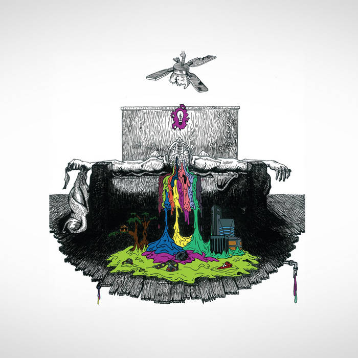

Twenty One Pilots
This album, also known as the self titled album is a masterpiece from cover to cover, and contains some of my favorite singles of all time.
- Most Popular song: Addict With a Pen
- My Favorite: Air Catcher
- Most Streamed: Implicit Demand For Proof
- Least Popular: Before You Start Your Day
- Most Underrated: Trapdoor
Regional at Best

The second album created by this group, and the only one which is not readily available on Spotify, Apple Music, and Amazon Prime music. This album also shares a few songs with Vessel, which is probably why it isn't readily available.
- Most Popular song: Car Radio
- My Favorite: Anathema
- Most Streamed: Car Radio
- Least Popular: Two
- Most Underrated: Slowtown
Vessel

One of the biggest albums by this band, and also the most popular among fans for it's large amount of hits. This album includes a picture of both Joseph's and Dun's grandfathers. This album was made by the duo to celebrate getting older, and was an instant hit for fans.
- Most Popular song: Holding Onto You
- My Favorite: House of Gold
- Most Streamed: Car Radio
- Least Popular: The Run and Go
- Most Underrated: The Run and Go
Blurryface

This album was the biggest album in terms of commercial success and popularity outside of the fanbase. Some of the songs on this album including Ride and Stressed Out, which have become part of wider pop culture. Overall this was one of the best albums by Twenty One Pilots and will be huge for years to come!
- Most Popular song: Ride
- My Favorite: Hometown
- Most Streamed: Stressed Out
- Least Popular: Goner
- Most Underrated: Hometown
Trench
Trench was a slight deviation from the usual form of storytelling Twenty One Pilots engaged in, but is also a good album. This album also recieved commercial success and had a large amount of good songs. This album focuses heavily on mental health, a big theme in their songs in many other albums, and features a vulture on the cover which is menti0ned on many songs in the album.
- Most Popular song: Chlorine
- My Favorite: Neon Gravestones
- Most Streamed: Chlorine
- Least Popular: Legend
- Most Underrated: Neon Gravestones
Scaled and Icy
This album, released in the midst of the Covid-19 Pandemic, was the smallest and least popular Twenty One Pilots album, featuring cover art of a dragon. This album had almost no promotion, which contributed to the lack of popularity among the wider population. Overall this was my least favorite album of theirs, but had some standout singles.
- Most Popular song: Choker
- My Favorite: Choker
- Most Streamed: Shy Away
- Least Popular: Bounce Man
- Most Underrated: Mulberry Street
Clancy
The latest album by Twenty One Pilots, and also the most anticipated. This album continues all of the story which was told through music videos in the other 6 albums, and is expected to continue to grow more the longer it stays out. This album also has many standout hits, but has less streams than most of the other albums due to its recency. Overall, I would say it is one of my favorite albums produced by Twenty One Pilots.
- Most Popular song: Backslide
- My Favorite: Oldies Station
- Most Streamed: Overcompensate
- Least Popular: Snap Back
- Most Underrated: Oldies Station